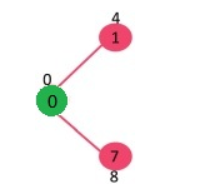
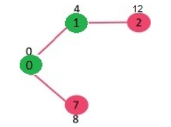
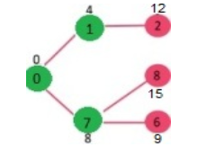
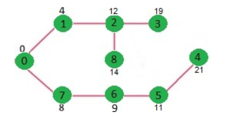
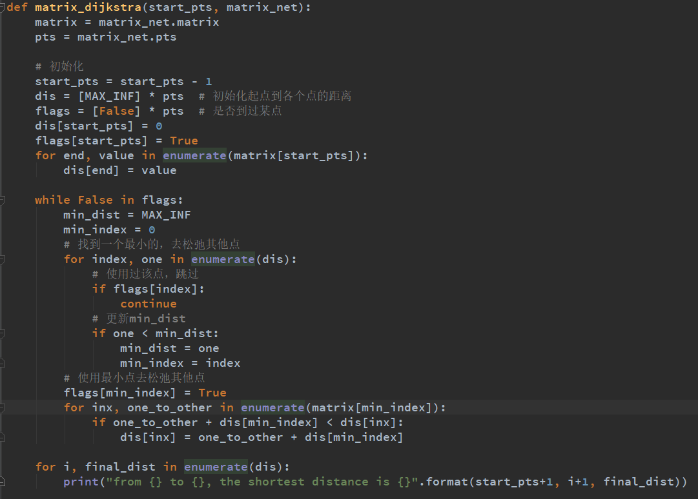

Dijkstra 单源最短路径算法
Dijkstra 算法是一种用于计算带权有向图中单源最短路径（SSSP：Single-Source Shortest Path）的算法，由计算机科学家 Edsger Dijkstra 于 1956 年构思并于 1959 年发表。其解决的问题是：给定图 G 和源顶点 v，找到从 v 至图中所有顶点的最短路径。

Dijkstra 算法描述：
- 创建源顶点 v 到图中所有顶点的距离的集合 distSet，为图中的所有顶点指定一个距离值，初始均为 Infinite，源顶点距离为 0；
- 创建 SPT（Shortest Path Tree）集合 sptSet，用于存放包含在 SPT 中的顶点；
-
如果 sptSet 中并没有包含所有的顶点，则：
- 选中不包含在 sptSet 中的顶点 u，u 为当前 sptSet 中未确认的最短距离顶点；
- 将 u 包含进 sptSet；
- 更新 u 的所有邻接顶点的距离值；
function Dijkstra(Graph, source):
dist[source] ← 0 // Distance from source to source
prev[source] ← undefined // Previous node in optimal path initialization
for each vertex v in Graph: // Initialization
if v ≠ source // Where v has not yet been removed from Q (unvisited nodes)
dist[v] ← infinity // Unknown distance function from source to v
prev[v] ← undefined // Previous node in optimal path from source
end if
add v to Q // All nodes initially in Q (unvisited nodes)
end for
while Q is not empty:
u ← vertex in Q with min dist[u] // Source node in first case
remove u from Q
for each neighbor v of u: // where v has not yet been removed from Q.
alt ← dist[u] + length(u, v)
if alt < dist[v]: // A shorter path to v has been found
dist[v] ← alt
prev[v] ← u
end if
end for
end while
例如，下面是一个包含 9 个顶点的图，每条边分别标识了距离。

源顶点 source = 0，初始时，
- sptSet = {false, false, false , false , false , false , false , false , false };
- distSet = {0, INF, INF, INF, INF, INF, INF, INF, INF};
将 0 包含至 sptSet 中；
- sptSet = {true, false, false, false, false, false, false, false, false};
更新 0 至其邻接节点的距离；
- distSet = {0, 4, INF, INF, INF, INF, INF, 8, INF};

选择不在 sptSet 中的 Min Distance 的顶点，为顶点 1，则将 1 包含至 sptSet；
- sptSet = {true, true, false, false, false, false, false, false, false};
更新 1 至其邻接节点的距离；
- distSet = {0, 4, 12, INF, INF, INF, INF, 8, INF};

选择不在 sptSet 中的 Min Distance 的顶点，为顶点 7，则将 7 包含至 sptSet；
- sptSet = {true, true, false, false, false, false, false, true, false};
更新 7 至其邻接节点的距离；
- distSet = {0, 4, 12, INF, INF, INF, 9, 8, 15};

选择不在 sptSet 中的 Min Distance 的顶点，为顶点 6，则将 6 包含至 sptSet；
- sptSet = {true, true, false, false, false, false, true, true, false};
更新 6 至其邻接节点的距离；
- distSet = {0, 4, 12, INF, INF, 11, 9, 8, 15};

以此类推，直到遍历结束。
- sptSet = {true, true, true, true, true, true, true, true, true};
- distSet = {0, 4, 12, 19, 21, 11, 9, 8, 14};

最终结果为源顶点 0 至所有顶点的距离：
Vertex Distance from Source
0 0
1 4
2 12
3 19
4 21
5 11
6 9
7 8
8 14
Python实现:
